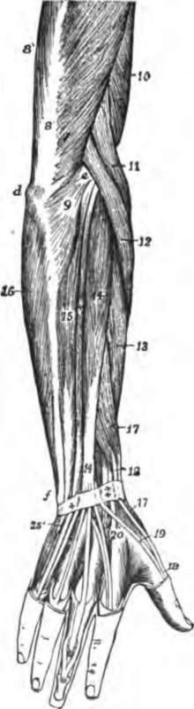

Chapter VII. The Muscles
Description
This section is from the book "The Human Body: An Elementary Text-Book Of Anatomy, Physiology, And Hygiene", by H. Newell Martin. Also available from Amazon: The Human Body.
Chapter VII. The Muscles
The muscles of the human body are more than five hundred in number; they vary very much in size; from tiny ones not an inch long, in the voice-box, to that on the front of the thigh (29, Pl. II.), which passes from the pelvis to the tibia, and is eighteen inches or more in length. Whatever their size, muscles present a similar structure and possess the same properties, their various uses depending on the different directions in which they pull, and the different things they pull upon. In addition to their primary function of moving the body the muscles give it roundness and shapeliness ; they also help to enclose cavities, as the abdomen and the mouth ; and they hold bones together at joints.
The Parts Of A Muscle
In its commonest form a muscle consists of a red soft central part, called its belly, which tapers towards each end and there passes into one or more dense white cords, made of connective tissue and called tendons; the tendons attach the muscle to parts of the skeleton.*
About how many muscles are there in the body? Between what limits do they differ in size? In what respects do all muscles resemble one another? How are their different uses determined? What functions do muscles fulfill besides moving the body and its parts? Give examples.
What is the most usual structure of a muscle? What is the use of tendons ?
Fig. 28. The muscles on the back of the hand, forearm, and lower half of the arm, as exposed on dissecting away the skin.
In Fig. 28 are shown some of the muscles of the arm. Their anatomical names we need not trouble about; but it will be seen that some (8, 11, 12) pass from arm to forearm: others, as 16,15,14,13,17, 18, start from the forearm bones and pass to the bones of the hands; near the wrist they end in slender tendons, which are bound down into place by a stout cross band of connective tissue. The skin has been dissected away from the back of the middle finger to show the endings of tendons on its phalanges.
The belly of a muscle is its working part; nerves from the brain or spinal cord enter it, and when its nerve is excited, whether involuntarily or by what we call an act of " will," the belly contracts; it forcibly changes its shape so as to become shorter and thicker. In so doing it drags on the tendons, which are passive inextensible cords and transmit the pull to the parts to which they are attached.
What portion of a muscle is its working part?
* The parts of a muscle may readily be seen in that which forms the calf of a frog's leg. Put a teaspoonf of of ether in a quart of water, immerse a frog in it, and cover the vessel. In a minute the animal will be quite insensible; its head can then be cut off and its spinal cord-destroyed by running a pin along it, without causing the animal any pain. Now make circular cuts through the skin at the top of the thighs and then peel the skin off like a pair of hose : it will come quite easily except about the knee-joint, where it may be necessary to carefully divide one or two tough bands. On the skinned leg many muscles will be observed, and the long slender tendons which run to the toes. The calf muscle will be seen to end below in a strong tendon near the heel. If this be divided, and the muscle turned upwards, it will be found to have at the upper end of its thick rounded belly a pair of short tendons.
The tendons are often quite long, as for example those of many of the muscles moving the fingers (Fig. 28), whose bellies are in the forearm. The belly of the common extensor muscle of the fingers (14, Fig. 28) is seen, for example, to be in the upper half of the forearm, and to end above the wrist in a single tendon which divides up into strips which run along the back of each finger; the muscles which straighten the thumb, 17, 18 and 19, are also seen to have long slender tendons.
Where a muscle passes over a joint it is usually reduced to a narrow tendon ; the bulky bellies, if they lay there, would make the joints clumsy and limit their mobility. Some muscles pass over two joints and can produce movement at either ; the biceps of the arm, fixed above to the scapula and below to the radius, can produce movement at either the elbow or the shoulder joint.
The shortening of a muscle when it contracts is shown by the movement which it causes ; the thickening may be seen and felt on the biceps in front of the humerus when the elbow is bent, or in the ball of the thumb when that digit is moved so as to touch the little finger; when a muscle contracts its belly may also be felt to grow harder. The swelling and hardening of a contracted muscle are daily illustrated when one schoolboy invites another to feel his " biceps".
What enters the belly of a muscle? How is the nerve of a muscle excited? What happens when the nerve is excited? What results from the contraction of the belly of a muscle?
Are tendons ever long? Describe the common extensor muscle of the fingers and its tendons. Describe the position and length of tendons of the muscles which extend the thumb.
What happens to a muscle when it passes over a joint? Why? Name a muscle which crosses two joints. At what joints can the biceps muscle of the arm produce movement?
How is the shortening of a contracting muscle shown?
Continue to: